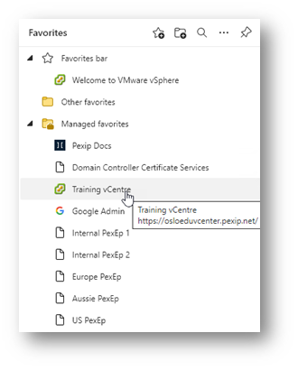

This lab provides a remote desktop (RDP) session to access the infrastructure within the laboratory environment. You may find that you prefer to use your local computer (and its browser or other tools) rather than the RDP session for some tasks and that the RDP environment may be preferable for others. It is your choice what tool to use and when, though network topology and access restrictions may prevent your personal computer from accessing some resources.
We have setup bookmarks in various browsers within the RDP session that allow you to gain quick access to the servers and services you will require.

Optional – You can set the language and keyboard in the RDP session for your personal preference.